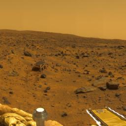
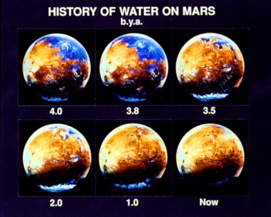
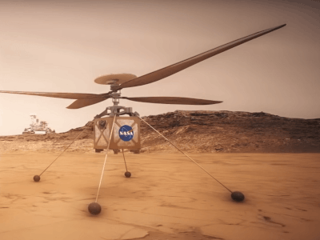

About Mars:
The fourth planet from the Sun, Mars is the second smallest planet in
the solar system after Mercury, yet is the most similar to Earth. The
red feature present on Mars is due to the iron oxide present on its
surface, and so is termed the 'Red Planet'. Mars is thought to be the
most probable planet for colonisation in our solar system.
General Information
- Number of moons: 2
- Gravity: 37% of Earths
- Date Of Discovery: 1610
- Planetary Type: Terestrial
- Rotation Period: 24hrs, 37mins
- Distance From Sun: 227.9 million km
- Name: Derived from the Roman god of War
Enviroment, Climate and Surface:
The diameter of Mars is roughly half that of Earths, with
a total surface area slightly less than the total amount of
dry land on Earth. The atmosphere of Mars is primarily carbon Dioxide
(96%), with some argon(1.93%) and Nitrogen(1.89%), along with traces
of oxygen and water. The thicker particles in the atmosphere of Mars would
mean the sky is quiet dusty and 'tawny' coloured when viewed from the surface.
Facts about Mars Enviroment/Surface:
- Mars has the most similar seasons to Earth because of a similar
rotational axis. However, they last roughly twice as long because of
the further distance of Mars from the sun, meaning each year is twice
that of Earths
- Lowest temperature in the poles approx -143 degrees celcius, and highest
on Mars in approx 35 degrees celcius
- Mars is 1.52times further from the sun than Earth, meaning only 43% of the
light reaches Mars
- Mars has the largest dust storms in the solar system, reaching speeds of
approx 100mph

Figure 1: Mars Surface
Habitability and Search for Life:
Mars is within the habital zone of our solar system and
is thought to be the most likely destination for human colonisation.
However, Mars is unable to contain large amounts of liquid water for long
periods of time because of its thin atmosphere. Despite this, in the past there
has been a flow of liquid water on the planets surface, increasing its
potential to support life; although research ha s suggested that this water may have
been too acidic and salty for regular Terestrial life, and therefore human consumption.
Facts about Mars Climate/Enviroment
- The thin atmosphere contributes to little heat transfer across the surface,
poor insulation against solar wind and incapability to form liquid water
- The surface is likely completely geologically dead (no recyclying of chemicals
and minerals between the surface and the interior of the planet)

Figure 2: Concept of water once on Mars
Exploration: Rovers,Orbiters and Landers
There have been a multitude of crewless spacecraft from orbiters and landers,
to rovers which study the surface, climate and geology. Currently there are 8
functioning SpaceCraft studying Mars, of which 6 are in orbit and two on the
surface. However, although the Mars rover opportunity is currently inactive,
NASA is attempting to restablish communication with it.
Future Mars Missions:
- Rosalind Franklin rover (Launch 2020): The Russian Federal agency will
send this rover to search for evidence of past microbial life on Mars
- Mars Helicopter Scout (Launch 2020): NASA will send a robotic Helicopter
to Mars to explore the surface and perfom roles such as finding the best driving
path for future rovers

Figure 3: Concept Mars Helicopter